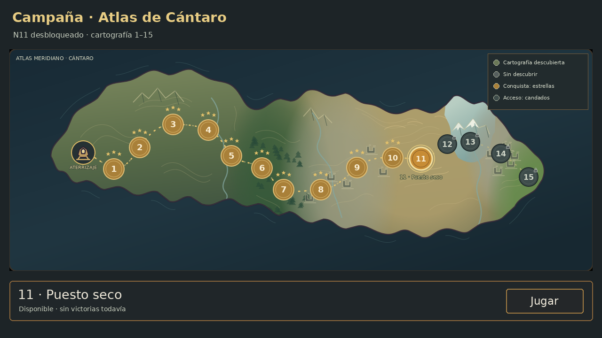

Una geografía para el recorrido B
El recorrido elegido se conserva. La nueva costa, el relieve y las transiciones de terreno buscan que el atlas se sienta continuo. Los biomas salen de los temas reales de los quince niveles; la ilustración sigue siendo una propuesta para aprobar.

Al desbloquear el nivel 11, esta propuesta revela la cartografía de 11–15. Se ven sus terrenos, pero 12–15 siguen con candado: descubrir una zona no abre todos sus niveles ni significa haberla conquistado.
Son tres estados de una misma maqueta, sin guardados ni partidas reales. El botón «Jugar» dibujado pertenece a la composición estática. Las fuentes de arte y los estados propuestos no se integraron al juego.
Qué cambia en el atlas
La costa tiene promontorios y entradas de mar de tamaños distintos. El terreno pasa gradualmente de la pradera al bosque, los restos y el desierto. El 13 ocupa un paso nevado reconocible; el 14 conserva restos sobre terreno pétreo y el 15 vuelve a una pradera verde junto a la costa. Las formas y los ríos son concepto visual, sin fijar geografía canónica nueva.
Qué propone el descubrimiento por zonas
Al principio se muestra 1–5; el resto mantiene su silueta en gris. Al desbloquear el 6 se revela 6–10 y al desbloquear el 11 se revela 11–15. Las fronteras de cartografía siguen corredores irregulares y suaves. Los candados continúan abriendo niveles de a uno, y las estrellas conservan su significado propio.
Esta regla es una propuesta para decidir, no una función implementada. Antes del código hacen falta la aprobación de Lucas y la especificación de guardados anteriores, modo de pruebas y separación de descubrimiento, acceso y conquista. Los bloques visibles no cambian el orden, las grillas ni el balance de campaña.
Biomas verificados nivel por nivel
El color y los motivos se basan en el campo «tema» de los JSON vigentes. En el 10 se conservan restos como transición al desierto. Ningún nivel de esta campaña usa volcán o pantano.
Qué necesita tu decisión
¿Te convence esta silueta y el reparto de terrenos sobre B? ¿Aprobás que la cartografía se descubra en esos tres bloques, al desbloquear 6 y 11? Podés aprobar el arte y pedir otro criterio de descubrimiento por separado.
No se validaron controles, teléfono o rendimiento con estas imágenes. Las fichas de partidas y las compuertas humanas siguen su curso propio.